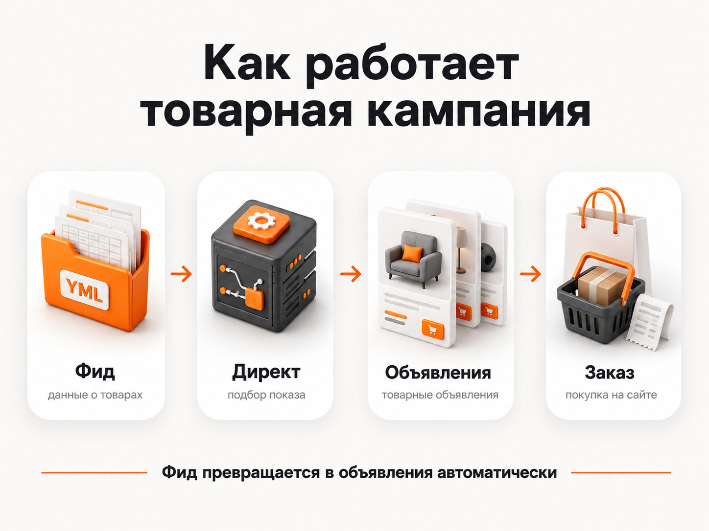

Блог о платном трафике
Товарная кампания в Яндекс Директе: как настроить фид и рекламу интернет-магазина
Товарная кампания в Яндекс Директе - один из основных инструментов для рекламы интернет-магазина. Вместо создания отдельных объявлений для сотен или тысяч позиций Директ получает информацию об ассортименте с сайта или из товарного фида и автоматически формирует объявления под конкретные товары и категории.
Сейчас этот формат особенно интересен бизнесу, который развивает собственный интернет-магазин параллельно с маркетплейсами или постепенно снижает от них зависимость. На маркетплейсе продавец получает готовый трафик внутри площадки. На собственном сайте покупателей приходится привлекать самостоятельно, и товарные объявления хорошо подходят именно для этой задачи.
На мой взгляд, главный элемент здесь не количество ручных настроек в рекламном кабинете, а качество товарного фида. Чем точнее Директ понимает, что именно вы продаете, сколько это стоит, какие у товара характеристики и есть ли он в наличии, тем больше данных получает алгоритм для создания объявлений и подбора аудитории.
Что такое товарная кампания в Яндекс Директе

Товарная кампания находится в Мастере кампаний и рассчитана в первую очередь на продвижение интернет-магазинов.
Директ может автоматически создавать три основных типа объявлений:
- для отдельных товаров;
- для страниц каталога и товарных подборок;
- для интернет-магазина в целом.
Товарные объявления могут показываться в обычном Поиске Яндекса, товарной галерее и Рекламной сети Яндекса. Внешний вид объявления зависит от места показа и выбранного системой трафарета. Пользователь может увидеть фотографию, название, цену, скидку, характеристики товара и сразу перейти на соответствующую карточку интернет-магазина.
Сначала Директ получает данные об ассортименте с сайта или из фида. Затем система формирует объявления, подбирает аудиторию и ведет пользователя на карточку товара, где он может оформить заказ.
Поэтому вручную собирать тысячи ключевых фраз и создавать отдельное объявление для каждого товара обычно не требуется.
Кому подходит товарная кампания
В первую очередь этот формат я бы рассматривал для интернет-магазинов, где есть полноценный каталог товаров и возможность оформить заказ на собственном сайте.
Особенно полезна автоматизация при большом ассортименте. Если у магазина 3000 товаров, вручную поддерживать актуальные объявления, цены и наличие практически бессмысленно. Фид позволяет обновлять эту информацию централизованно.
Но размер каталога сам по себе не является главным условием. Товарную кампанию можно использовать и для сравнительно небольшого магазина.
Она хорошо подходит, если:
- пользователи ищут конкретные товары в интернете;
- у магазина есть нормальные карточки товаров;
- цены и наличие регулярно обновляются;
- настроена Яндекс Метрика;
- можно отслеживать заказы и выручку;
- ассортимент достаточно структурирован, чтобы алгоритм мог его нормально обрабатывать.
Если у вас пять товаров с долгим циклом сделки и каждый требует консультации менеджера, товарная кампания уже не обязательно будет главным рекламным инструментом. Здесь нужно смотреть на реальный спрос и воронку.
Товары с сайта или товарный фид - что лучше
Сейчас Директ позволяет передавать ассортимент несколькими способами:
| Источник | Когда использовать |
|---|---|
| Товары, найденные на сайте | Быстрый запуск, простой каталог |
| Товарный фид | Полноценный интернет-магазин, большой или регулярно меняющийся ассортимент |
| Ручное добавление | Небольшое количество товаров, которые редко меняются |
Для нормального интернет-магазина я бы практически всегда старался использовать фид.
Парсинг сайта удобен тем, что практически ничего не нужно готовить. Директ сам ищет карточки товаров и получает из них информацию. Но в этом случае вы сильнее зависите от того, насколько хорошо робот смог разобрать структуру сайта.
Фид дает больше контроля над данными. Можно явно передать название товара, производителя, модель, описание, цену, старую цену, изображения, наличие, характеристики и другие параметры. Кроме того, эти данные можно использовать для фильтрации ассортимента.
Сам Яндекс рекомендует для интернет-магазинов YML. Фид можно загрузить файлом или передавать по ссылке. Второй способ удобнее для постоянно меняющегося магазина: если исходный файл обновляется, Директ получает новые данные автоматически. При загрузке файла с компьютера обновлять его придется вручную.
Почему качество товарного фида настолько важно
Фид нельзя рассматривать как технический файл, который программист один раз создал и забыл.
Это один из источников данных для рекламного алгоритма.
Представим два варианта.
В первом фиде товар называется:
Кресло
Во втором:
Компьютерное кресло Chairman 696, черное
Во втором случае системе намного проще понять, что именно рекламируется и как связать предложение с потенциальным спросом.
Яндекс отдельно рекомендует передавать в названии тип товара, производителя, модель, модификацию и важные характеристики. YML также позволяет передавать параметры товара через param, а автоматическая генерация объявлений может использовать информацию из разных элементов фида.
Какие данные стоит передавать
Для большинства интернет-магазинов я бы внимательно проверил как минимум следующие элементы:
Название товара. Оно должно однозначно объяснять, что продается. Не нужно превращать название в рекламный текст с формулировками вроде «лучшая цена» или «суперскидка».
Ссылка. Каждое предложение должно вести непосредственно на актуальную страницу соответствующего товара.
Цена. Цена в рекламе должна совпадать с ценой на сайте.
Старая цена. Если действительно действует скидка, можно передавать старую и новую стоимость. Директ сможет использовать эти данные в подходящих форматах объявлений.
Наличие. Если товара уже нет, не нужно продолжать привлекать пользователей на его карточку. Информация о наличии в фиде должна соответствовать сайту.
Производитель и модель. Для брендовых товаров это очень полезные данные, особенно когда пользователь ищет конкретную модель.
Категория. Нормальная структура категорий упрощает управление большим ассортиментом и дальнейшую фильтрацию.
Описание. Короткое содержательное описание дает системе дополнительную информацию для создания объявления.
Характеристики. Цвет, материал, размер, пол и другие параметры могут использоваться при формировании и подборе товарных объявлений.
Изображения. Не стоит выгружать случайную фотографию только потому, что она есть в карточке. Для товарной рекламы изображение фактически становится одним из главных элементов объявления.
Я бы отдельно контролировал, как выглядят фотографии в небольшом размере. Если товар занимает четверть изображения, а остальное пространство заполнено интерьером или декоративным фоном, в рекламной карточке он может просто потеряться.
Яндекс поддерживает несколько изображений товара, а первое изображение из предложения используется как основное.
Как создать и проверить товарный фид
Способ подготовки фида зависит от размера каталога и частоты изменений. Для небольшого ассортимента подходит ручная выгрузка или генератор. Для магазина с регулярными изменениями цен и наличия лучше настроить автоматическое формирование через CMS или отдельный сервис.
Для товарной кампании чаще выбирают YML. CSV и XML тоже могут использоваться, но перед выбором формата нужно проверить, какие поля и страницы каталога требуется передать в конкретной кампании.
Способы подготовки фида
- модуль для CMS, если каталог постоянно обновляется;
- генератор, если данные находятся в таблице или системе учета;
- ручная подготовка для небольшого числа товаров;
- разработка собственной выгрузки, если типовая интеграция не подходит.
До загрузки нужно проверить не только наличие обязательных полей, но и связь между данными фида и реальным сайтом.
Что проверить перед загрузкой
- у каждого товара есть понятное название и отдельная страница;
- цена, валюта и наличие совпадают с карточкой товара;
- ссылки и изображения открываются без ошибок;
- товары распределены по корректным категориям;
- идентификаторы товаров не повторяются;
- в выгрузке не осталось снятых с продажи позиций.
После загрузки смотрите не только на сам факт принятия файла. Проверьте, сколько предложений принято, какие позиции исключены и по какой причине. Если часть ассортимента не загрузилась, сначала исправьте данные фида и только потом настраивайте фильтры кампании.
Подробнее о принципе работы товарного фида - в отдельной статье о данных для Яндекс Директа.
Не рекламируйте весь ассортимент одинаково
Одна из ошибок при запуске крупного интернет-магазина - просто загрузить весь фид и считать работу законченной.
У разных товаров может сильно отличаться экономика.
Например:
- один товар стоит 2000 рублей, другой 80 000;
- у одной категории маржа 40%, у другой 10%;
- часть ассортимента постоянно есть на складе, часть привозится под заказ;
- одни товары хорошо продаются круглый год, другие сильно зависят от сезона;
- некоторые категории могут получать много трафика, но почти не приносить заказов.
В товарной кампании доступны фильтры, с помощью которых можно выбирать, какие товары продвигать. Поэтому структуру имеет смысл строить вокруг реальной экономики магазина, а не только вокруг каталога на сайте.
Я бы не создавал десятки кампаний заранее. Сначала лучше разделить действительно разные группы товаров, если для них нужны разные бюджеты, цели или ограничения, а дальше принимать решения по статистике.
Как настроить товарную кампанию
1. Настройте Яндекс Метрику
До запуска на сайте должен работать счетчик Яндекс Метрики и должны быть настроены цели.
Для интернет-магазина особенно полезна электронная коммерция. Она позволяет передавать информацию о товарах, заказах и доходе.
Если алгоритм видит реальную покупку и ее стоимость, у него намного больше полезных данных, чем при оптимизации на просмотр страницы или добавление товара в корзину.
Услуги по настройке и ведению Яндекс Директа и кейсы собраны на основной странице сайта.
2. Создайте товарную кампанию
В Яндекс Директе:
Откройте раздел добавления кампании, выберите Мастер кампаний, а затем тип «Товарная кампания».
После этого указывается адрес интернет-магазина. Директ анализирует сайт и предлагает доступные варианты настройки.
3. Подключите ассортимент
Выберите товары с сайта, загрузите новый фид или добавьте предложения вручную.
Для полноценного интернет-магазина я предпочитаю YML-фид по ссылке с автоматическим обновлением.
После загрузки обязательно проверьте сам фид в Директе. Ошибки в структуре, отсутствие отдельных товаров или неправильные параметры лучше найти до запуска рекламы.
4. Настройте фильтры товаров
Не обязательно продвигать все предложения из исходного фида.
Можно выбрать нужный ассортимент с помощью фильтров. Директ сразу показывает, сколько товаров соответствует заданным условиям, поэтому легко обнаружить ситуацию, когда фильтр случайно исключил весь ассортимент.
5. Добавьте страницы каталога
Кроме отдельных карточек товаров Директ может рекламировать категории и подборки.
Например:
- ноутбуки;
- диваны;
- зимние шины;
- женские куртки;
- товары со скидкой.
Это отдельный полезный уровень рекламы. Человек не всегда ищет конкретную модель. Иногда он еще выбирает между несколькими вариантами, и переход на категорию будет логичнее перехода на один товар.
Информацию о каталогах Директ может получить с сайта или из фида. Для YML предусмотрен отдельный блок collections. Яндекс рекомендует использовать каталожные объявления для расширения охвата и получения дополнительных конверсий.
6. Проверьте объявления магазина
Кроме товарных карточек кампания может показывать объявления интернет-магазина в целом.
Директ автоматически предлагает заголовки, тексты и изображения, но я бы не оставлял этот блок полностью без проверки.
Убедитесь, что:
- тексты нормально описывают предложение;
- изображения подходят магазину;
- быстрые ссылки ведут в полезные разделы;
- разные варианты заголовков и текстов нормально сочетаются между собой.
В 2026 году Директ также может создавать дополнительные нейрообъявления магазина. Это расширяет количество автоматически генерируемых вариантов, но не отменяет необходимости нормально подготовить сайт, фид и аналитику.
7. Настройте аудиторию и регионы
Директ может самостоятельно подобрать аудиторию либо использовать заданные вручную тематические слова, интересы и привычки.
При этом товарные объявления показываются с помощью автотаргетинга. Для товаров и страниц каталога по умолчанию также работает офферный ретаргетинг: пользователь может повторно увидеть в РСЯ товары, которыми уже интересовался на сайте.
Регион нужно выбирать с учетом реальной доставки. Нет смысла получать заказы из города, куда магазин не может нормально отправить товар или где доставка делает покупку экономически невыгодной.
8. Выберите цели и бюджет
В товарной кампании сейчас доступны разные варианты управления стоимостью результата: средняя цена конверсии с оплатой за клики, фиксированная цена с оплатой за целевые действия или работа без ограничения цены конверсии в пределах недельного бюджета.
Для целей покупки с передачей данных электронной коммерции можно использовать ограничение по доле рекламных расходов. Это особенно удобно для интернет-магазинов, где товары отличаются по стоимости: алгоритм может ориентироваться не на одинаковую цену каждого заказа, а на долю рекламных расходов от полученного дохода.
Какой вариант использовать, зависит от количества накопленных данных и экономики магазина.
Если продаж мало, я бы осторожно относился к слишком жестким ограничениям. Можно поставить желаемую стоимость заказа настолько низко, что алгоритм просто не сможет стабильно находить покупателей.
Яндекс рекомендует задавать недельный бюджет, которого достаточно минимум для 10 конверсий. Это не означает, что десять заказов обязательно будут получены. Речь идет о том, что у стратегии должен быть достаточный объем денег для обучения и работы.
Услуги по настройке и ведению Яндекс Директа и кейсы собраны на основной странице сайта.
Что проверить до запуска товарной кампании
Перед запуском полезно пройти короткий предзапусковой чек-лист. Он помогает отделить ошибку рекламной настройки от проблемы сайта или ассортимента.
- Счетчик Яндекс Метрики установлен, а у Директа есть доступ к нему.
- Цель покупки настроена вместе с передачей дохода и состава заказа.
- Фид загружается, товары приняты, а цены и наличие не расходятся с сайтом.
- Страницы товаров открываются, содержат понятное предложение и позволяют оформить заказ.
- Регион показа соответствует реальной географии доставки.
- Фильтры не исключают весь ассортимент и не оставляют только случайные позиции.
- Бюджет рассчитан с учетом маржи, среднего чека и допустимой стоимости заказа.
Если один из пунктов не выполнен, запуск все равно технически может состояться. Но результат будет сложно оценивать: рекламная система будет получать неполные данные, а магазин - трафик на неподготовленные страницы.
Как оценивать товарную кампанию после запуска
Для интернет-магазина я бы не оценивал рекламу по CTR или стоимости клика.
Смотрите на связь между расходами, заказами, стоимостью заказа, выручкой, маржой и ДРР или ROAS.
Дорогой клик может привести к заказу на 100 000 рублей. Дешевый клик может закончиться обычным просмотром карточки.
Поэтому после накопления статистики нужно смотреть:
- расходы;
- количество заказов;
- CPA или CPO;
- выручку;
- средний чек;
- ДРР;
- ROAS;
- прибыль или маржинальную прибыль, если эти данные можно связать с рекламой.
Отдельно стоит анализировать товары и категории.
Товарная кампания позволяет смотреть статистику продвижения конкретных предложений. Это полезно, потому что внутри одного большого фида почти всегда появляются явные лидеры и аутсайдеры. Одни товары стабильно продаются, другие собирают расходы без результата.
Дальше можно менять фильтры, структуру, ассортимент и распределение бюджета уже по реальным данным.
Услуги по настройке и ведению Яндекс Директа и кейсы собраны на основной странице сайта.
Что делать в первые 7-14 дней после запуска
Первые дни нужны не для постоянной смены настроек, а для проверки качества данных и первых сигналов по ассортименту. Я бы не делал вывод о всей кампании по одному дню и не менял одновременно цель, бюджет и фильтры.
- Проверьте, что новые товары и изменения цен попадают в фид.
- Посмотрите, нет ли пустых групп и массово исключенных предложений.
- Сопоставьте расходы, заказы и выручку по категориям, а не только по кампании целиком.
- Отдельно отметьте товары, которые получают клики без переходов к оформлению заказа.
- Перед увеличением бюджета проверьте наличие товара, доставку и качество посадочной страницы.
Если проблема повторяется, сначала ищите ее в конкретном звене: фид, карточка товара, цена, доставка, цель или экономика категории. Это точнее, чем менять кампанию целиком из-за одной общей цифры.
Почему товарная кампания может плохо работать
Автоматизация не делает интернет-магазин конкурентоспособным сама по себе.
Если после запуска нет нормального результата, я бы проверял несколько направлений.
Плохой фид
Нет характеристик, странные названия, устаревшие цены, слабые изображения, рекламируются отсутствующие товары.
Система получает плохие исходные данные и на их основе строит объявления.
Слабые карточки товаров
Пользователь нажал на хорошее объявление, но попал на страницу с плохими фотографиями, непонятной доставкой или неудобным оформлением заказа.
Это уже проблема сайта, которую настройкой Директа не исправить.
Неконкурентная цена
Товарная галерея особенно наглядно показывает предложения разных магазинов рядом друг с другом. Если один и тот же товар у вас заметно дороже без объяснимого преимущества, реклама не сможет полностью компенсировать разницу.
Слишком маленький бюджет
Кампания получает мало данных и практически не успевает нормально обучаться.
Постоянные изменения бюджета и настроек ситуацию дополнительно усложняют. Яндекс сам рекомендует оценивать товарную кампанию в рамках календарной недели и давать стратегии время на обучение.
Неправильная цель
Если интернет-магазин реально получает покупки, но кампания оптимизируется на переход в корзину, алгоритм учится искать людей, которые кладут товар в корзину.
Это не всегда те же пользователи, которые его оплачивают.
Чем ближе выбранная цель к реальному бизнес-результату, тем полезнее данные для оптимизации.
В одном сегменте смешана разная экономика
Дешевые низкомаржинальные товары и дорогие высокомаржинальные позиции иногда требуют разных условий продвижения.
Если смотреть только общую стоимость заказа по кампании, прибыльные и убыточные сегменты легко смешать в одну красивую среднюю цифру.
Товарная кампания или Единая перфоманс-кампания
Товарные объявления можно запускать не только через Мастер кампаний.
В Директ Про есть Единая перфоманс-кампания, где также можно использовать товарные объявления, фиды и объявления страниц каталога. В 2026 году ЕПК дополнительно использует комбинаторные объявления и позволяет специалисту гибче выбирать места показа и структуру кампании.
Разница в подходе примерно такая:
| Товарная кампания | Единая перфоманс-кампания |
|---|---|
| Мастер кампаний | Директ Про |
| Проще запустить | Больше настроек |
| Много автоматизации | Больше контроля специалиста |
| Подходит для быстрого запуска магазина | Подходит для более сложной рекламной структуры |
Я бы не считал один вариант автоматически лучше другого.
Для владельца магазина, который хочет быстро запустить продвижение, товарная кампания логична. Если требуется отдельно контролировать Поиск, РСЯ, товарную галерею, разные группы товаров и другие элементы рекламной структуры, ЕПК дает больше возможностей.
При этом фид остается важным в обоих случаях. Подробнее о выборе между форматами можно прочитать в статье про Единую перфоманс-кампанию.
Частые вопросы о товарной кампании
Нужен ли фид для запуска?
Нет, Директ может использовать товары, найденные на сайте, или ручное добавление. Но для регулярно меняющегося ассортимента фид дает больше контроля над ценами, наличием, характеристиками и фильтрами.
Фид загружать файлом или передавать по ссылке?
Файл подойдет для разовой проверки или каталога, который почти не меняется. Ссылка удобнее, когда цены, остатки и состав ассортимента обновляются автоматически.
Что делать, если часть товаров не загрузилась?
Сначала сравните список исключенных позиций с ошибками в фиде. Проверьте ссылки, цены, наличие, изображения, категории и идентификаторы. После исправления повторите загрузку и только затем возвращайтесь к настройке фильтров.
Нужно ли рекламировать весь каталог?
Нет. Ассортимент лучше разделять по спросу, марже, наличию и сезонности. Продвижение всех товаров одной группой может смешать прибыльные и убыточные позиции.
Товарная кампания для собственного интернет-магазина
Если бизнес хочет развивать собственный интернет-магазин, товарная кампания сейчас является одним из первых инструментов Яндекс Директа, который я бы рассматривал для теста.
Она позволяет быстро охватить большой ассортимент и не создавать объявления вручную для каждой позиции.
Но сама простота запуска немного обманчива. Нажать несколько кнопок действительно легко. Гораздо больше работы находится вокруг кампании:
- подготовить качественный товарный фид;
- правильно передавать цены и наличие;
- привести в порядок карточки товаров;
- настроить электронную коммерцию;
- выбрать реальные бизнес-цели;
- разделить ассортимент по экономике;
- после запуска анализировать продажи, а не клики.
Хорошая товарная кампания начинается не с рекламного кабинета, а с качественных данных об ассортименте.
Если данные, сайт и аналитика подготовлены нормально, Директ получает достаточно информации, чтобы самостоятельно находить подходящие варианты показа, адаптировать объявления под разные трафареты и оптимизироваться по фактическим результатам магазина.
Услуги по настройке и ведению Яндекс Директа и кейсы собраны на основной странице сайта.